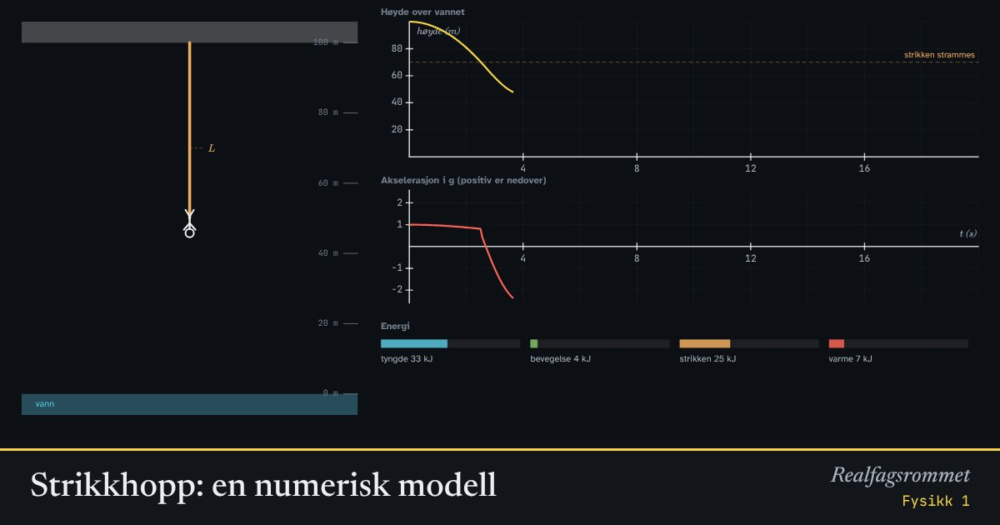

Strikkhopp: en numerisk modell
Under et strikkhopp endrer kraften seg hele tiden: først fritt fall, så drar strikken stadig hardere. Akselerasjonen er ikke konstant, så vi regner ut bevegelsen steg for steg med en numerisk metode.
Start animasjonen
Formler
Om animasjonen
De første metrene faller hopperen fritt, bare bremset av lufta. Når strikken er strukket, drar den oppover med en kraft som er proporsjonal med hvor mye den er strukket, som en fjær.
Programmet regner ut summen av kreftene, akselerasjonen, ny fart og ny posisjon, om og om igjen med et lite tidssteg. Det er Eulers metode, som du kan programmere selv.
Energien går fra potensiell energi i tyngdefeltet til bevegelsesenergi og så til elastisk energi i strikken. Luftmotstand og indre friksjon i strikken gjør noe av energien om til varme, så svingningene dør ut.
Grafen nederst viser akselerasjonen målt i g. Den største akselerasjonen kommer i bunnen, når strikken er mest strukket, og peker da oppover.
Prøv dette
- Finn en strikklengde der hopperen akkurat ikke treffer vannet.
- Hva skjer med det laveste punktet hvis en tyngre person hopper med samme strikk?
- Hvor stor er den største akselerasjonen, målt i g? Når skjer den?
- Hvorfor bør strikken ikke være for stiv?
Kompetansemål
- Fysikk 1: Vurdere, bruke og lage modeller
- Fysikk 1: Numeriske metoder og programmering når akselerasjonen ikke er konstant
Mer om bevegelse og krefter
- Rettlinjet bevegelse: posisjon, fart og akselerasjon
- Krefter på skråplan: Newtons lover
- Friksjon: hvilefriksjon og glidefriksjon
- Newtons 2. lov for sammensatte systemer
- Hva viser vekta i heisen?
- Fall med luftmotstand: Eulers metode
- Støt og bevegelsesmengde
- Ballistisk pendel: bevegelsesmengde og energi
- Skrått kast
- Sirkelbevegelse og sentripetalkraft
- Planetbaner i et gravitasjonsfelt